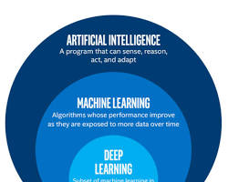

Understanding Artificial Intelligence
Artificial intelligence is the simulation of human intelligence processes by machines, especially computer systems. Specific applications of AI include expert systems, natural language processing, speech recognition and machine vision. Artificial intelligence (AI) is a branch of computer science that deals with the creation of intelligent agents, which are systems that can reason, learn, and act autonomously. AI research has been highly successful in developing effective techniques for solving a wide range of problems, from game playing to medical diagnosis.
Specific applications:
AI has various applications across different industries, including:
- Machine learning: This subfield of AI focuses on the development of algorithms that can learn from data without being explicitly programmed. Machine learning algorithms are used in a wide variety of applications, including spam filtering, facial recognition, and self-driving cars. 
- Natural language processing:This subfield of AI focuses on the development of algorithms that can understand and process human language. Natural language processing algorithms are used in a wide variety of applications, including machine translation, chatbots, and voice assistants.
- Automotive: AI powers autonomous vehicles for navigation and collision avoidance.
- Customer Service: AI chatbots provide 24/7 customer support and assistance.
These are just a few examples of how AI is transforming industries and shaping the future.